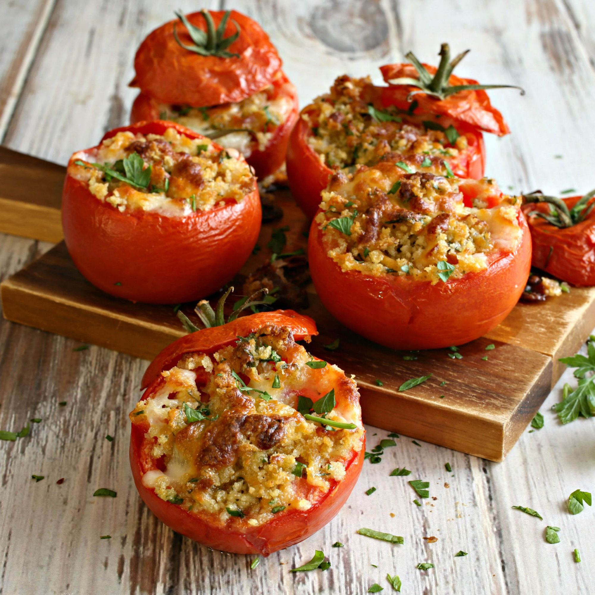

Home
Stuffed Tomatoes

If you're looking for a quick dish between bigger meals, or a complimentary side, stuffed recipes have got you covered. This recipe is easy
to remember, easier to enjoy and customiseable if you're interested in experimenting with your cooking. The dish is so customiseable, you can
even change the tomatoes out for bell peppers or courgettes. You can always make more than you need, and save some for later!
Ingredients
- 4 medium tomatoes (or whichever vessel you've chosen)
- 1 cup of cooked rice
- Half a cup of cheese
- 2 tablespoons of fresh basil
- 2 cloves of garlic
Directions
- Preheat your air fryer to 190 degrees celcius (about 375 degrees fahrenheit).
- Cut the tops off the tomatoes and scoop out the insides, mince the garlic cloves and chop the basil.
- Combine the rice, cheese, half of the basil, and garlic in a bowl. Once thoroughly mixed, stuff the contents of the bowl into the tomatoes.
- Cook the stuffed tomatoes in the air fryer until they're tender, and the fillings are heated through. This takes about 15 minutes.
- Garnish the tomatoes with what remains of the basil and serve.
Remember to let your food cool down to room temperature before refrigerating!